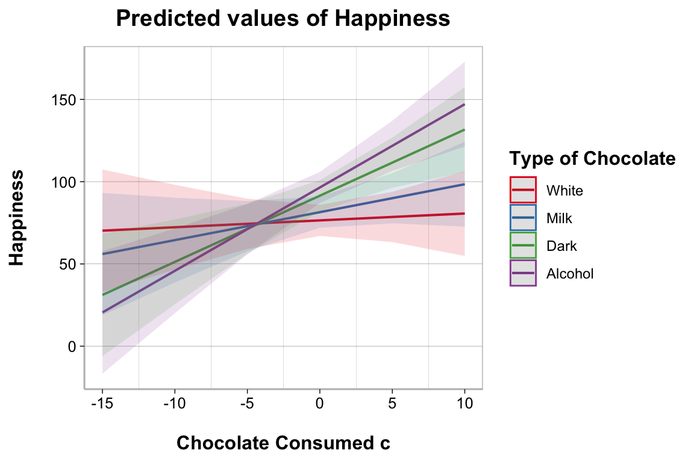

theme_spacious <- function(font.size = 14, bold = TRUE){
key.size <- trunc(font.size * .8)
if (bold == TRUE) {
face.type <- "bold"
} else {
face.type <- "plain"
}
theme(text = element_text(size = font.size),
axis.title.x = element_text(margin = margin(t = 15, r = 0,
b = 0, l = 0),
face = face.type),
axis.title.y = element_text(margin = margin(t = 0, r = 15,
b = 0, l = 0),
face = face.type),
legend.title = element_text(face = face.type),
legend.spacing = unit(20, "pt"),
legend.text = element_text(size = key.size),
plot.title = element_text(face = face.type, hjust = .5,
margin = margin(b = 10)),
plot.caption = element_text(hjust = 0, size = key.size,
margin = margin(t = 20)),
strip.background = element_rect(fill = "white", color = "white"),
strip.text = element_text(color = "black",
face = face.type))
}
output_theme <- theme_linedraw() +
theme_spacious(font.size = 12) +
theme(panel.border = element_rect(color = "gray"),
axis.line.x = element_line(color = "gray"),
axis.line.y = element_line(color = "gray"),
panel.grid.major.x = element_blank(),
panel.grid.minor.y = element_blank())
theme_set(output_theme)15 Regression
Suppose we have a data set in which we are interested in what variables can predict people’s self-reported levels of happiness, measured using valid and reliable questionnaires. We measured a number of other variables we thought might best predict happiness.
Financial wealth (annual income)
Emotional Regulation (higher values indicate better emotional regulation ability)
Social Support Network (higher values indicate a stronger social support network)
Chocolate Consumption (higher values indicate more chocolate consumption on a weekly basis)
Type of Chocolate (the type of chocolate they consume the most of)
ggplot2 Theme
It can be nice to set a global ggplot2 theme that is applied to all ggplots. Here is some code on how to 1) create a custom theme e.g., theme_spacious and 2) how to set the global theme based on some combination of custom and template themes.
Table Theme
It can also be nice to customize how tables from statistical analyses are displayed. Here is some code on how to define a table theme using the knitr and kableExtra packages. You will see that we will pass tables to table_theme() with some customization for the number of digits to round to, adding a table title, and footnotes.
table_theme <- function(x, digits = 3, title = NULL, note = NULL) {
kable(x, digits = digits, caption = title) |>
kable_classic(position = "left") |>
kable_styling(full_width = FALSE, position = "left") |>
footnote(general = note)
}Specify factor levels
Notice that the Type of Chocolate variable is categorical. When dealing with categorical variables for statistical analyses in R, it is usually a good idea to define the order of the categories as this will by default determine which category is treated as the reference (comparison group).
Descriptives
It is a good idea to get a look at the data before running your analysis. One way of doing so is to calculate summary statistics (descriptives) and print it out in a table. There are some column we can’t or don’t want descriptives for. For instance there is usually a subject id column in data files or some variables might be categorical rather than continuous variables. We can remove those column using select() from the dplyr package.
library(e1071)
happiness_data |>
select(-Subject, -Type_of_Chocolate) |>
pivot_longer(everything(),
names_to = "Variable",
values_to = "value") |>
group_by(Variable) |>
summarise(n = length(which(!is.na(value))),
Mean = mean(value, na.rm = TRUE),
SD = sd(value, na.rm = TRUE),
min = min(value, na.rm = TRUE),
max = max(value, na.rm = TRUE),
Skewness =
skewness(value, na.rm = TRUE, type = 2),
Kurtosis =
kurtosis(value, na.rm = TRUE, type = 2),
'% Missing' =
100 * (length(which(is.na(value))) / n())) |>
table_theme(title = "Descriptive Statistics")| Variable | n | Mean | SD | min | max | Skewness | Kurtosis | % Missing |
|---|---|---|---|---|---|---|---|---|
| Chocolate_Consumption | 152 | 10.497 | 3.960 | 0 | 20.545 | -0.080 | -0.125 | 0 |
| Emotion_Regulation | 152 | 57.395 | 19.691 | 5 | 120.213 | -0.018 | 0.276 | 0 |
| Financial_Wealth | 152 | 422.042 | 142.156 | 10 | 760.284 | -0.095 | -0.169 | 0 |
| Happiness | 152 | 86.468 | 32.709 | 10 | 173.036 | 0.075 | -0.222 | 0 |
| Social_Support | 152 | 44.646 | 16.315 | 7 | 84.968 | 0.129 | -0.161 | 0 |
Note
skewness() and kurtosis() are from the e1071 package
Using modeloutput
I have an R package, modeloutput , for easily creating nice looking tables for statistical analyses. For a descriptives table we can use descriptives_table().
library(modeloutput)
happiness_data |>
select(-Subject, -Type_of_Chocolate) |>
descriptives_table()| Variable | n | Mean | SD | min | max | Skewness | Kurtosis | % Missing |
|---|---|---|---|---|---|---|---|---|
| Happiness | 152 | 86.47 | 32.71 | 10 | 173.04 | 0.08 | -0.22 | 0 |
| Financial_Wealth | 152 | 422.04 | 142.16 | 10 | 760.28 | -0.10 | -0.17 | 0 |
| Emotion_Regulation | 152 | 57.40 | 19.69 | 5 | 120.21 | -0.02 | 0.28 | 0 |
| Social_Support | 152 | 44.65 | 16.32 | 7 | 84.97 | 0.13 | -0.16 | 0 |
| Chocolate_Consumption | 152 | 10.50 | 3.96 | 0 | 20.54 | -0.08 | -0.13 | 0 |
| Total N = 152 |
Historgrams
Visualizing the actual distribution of values on each variable is a good idea too. This is how outliers or other problematic values can be detected. The most simple way to do so is by plotting a histogram for each variable in the data file using hist().
hist(happiness_data$Happiness)Correlation Tables
Regression models are based on the co-variation (or correlation) between variables. Therefore, we might want to first evaluate all of the pairwise correlations in the data.
Using correlation
One option is to use the correlation package to create scatterplots using a combination of plot() and cor_test().
library(correlation)
plot(cor_test(happiness_data, "Financial_Wealth", "Happiness"))Using ggplot2
The ggplot2 way, more code but better customization. The geom_smooth(method = "lm") will plot the regression line on the data, the line of best fit.
library(ggplot2)
ggplot(data = happiness_data, aes(x = Financial_Wealth, y = Happiness)) +
geom_point() +
geom_smooth(method = "lm") +
labs(x = "Financial Wealth (annual income)") +
theme_linedraw()
## `geom_smooth()` using formula = 'y ~ x'Using base R
The base R way, easy and simple with plot().
plot(happiness_data$Financial_Wealth, happiness_data$Happiness)Regression
Regression models allow us to test more complicated relationships between variables. It is important to match your research question with the correct regression model. But also, thinking about the different types of regression models can help you clarify your research question. We will take a look at how to conduct the following regression models in R:
Simple regression
Multiple regression
Hierarchical regression
Mediation analysis
Moderation analysis
To conduct a regression model is fairly simple in R, all you need is to specify the regression formula in the lm() function.
Simple Regression
In what is called simple regression, there is only one predictor variable. Simple regression is not really necessary because it is directly equivalent to a correlation. However, it is useful to demonstrate what happens once you add multiple predictors into a model.
The formula in the lm() function takes on the form of: dv ~ iv.
Model
reg_simple <- lm(Happiness ~ Financial_Wealth, data = happiness_data)Using broom and performance
The broom and performance packages provide an easy way to get model results into a table format that we can then pass on to table_theme()
| r.squared | adj.r.squared | sigma | statistic | p.value | df | logLik | AIC | BIC | deviance | df.residual | nobs |
|---|---|---|---|---|---|---|---|---|---|---|---|
| 0.047 | 0.041 | 32.038 | 7.4 | 0.007 | 1 | -741.642 | 1489.284 | 1498.356 | 153960.4 | 150 | 152 |
library(performance)
model_parameters(reg_simple) |>
table_theme(title = "Unstandardized Parameters")| Parameter | Coefficient | SE | CI | CI_low | CI_high | t | df_error | p |
|---|---|---|---|---|---|---|---|---|
| (Intercept) | 65.412 | 8.165 | 0.95 | 49.279 | 81.545 | 8.011 | 150 | 0.000 |
| Financial_Wealth | 0.050 | 0.018 | 0.95 | 0.014 | 0.086 | 2.720 | 150 | 0.007 |
model_parameters(reg_simple, standardize = "refit") |>
table_theme(title = "Standardized Parameters")| Parameter | Coefficient | SE | CI | CI_low | CI_high | t | df_error | p |
|---|---|---|---|---|---|---|---|---|
| (Intercept) | 0.000 | 0.079 | 0.95 | -0.157 | 0.157 | 0.00 | 150 | 1.000 |
| Financial_Wealth | 0.217 | 0.080 | 0.95 | 0.059 | 0.374 | 2.72 | 150 | 0.007 |
Using modeloutput
My modeloutput package provides a way to display regression tables in output format similar to other statistical software packages like JASP or SPSS.
library(modeloutput)
regression_rsquared(reg_simple)| Model | $R^2$ | $R^2$ adj. | logLik | AIC | BIC |
|---|---|---|---|---|---|
| H1 | 0.047 | 0.041 | -741.642 | 1489.284 | 1498.356 |
| 1H1: Happiness ~ Financial_Wealth; N = 152 |
regression_modelsig(reg_simple)| Model | Term | Sum of Squares | df | Mean Square | F-value | p |
|---|---|---|---|---|---|---|
| H1 | Regression | 73472.01 | 2 | 36736.003 | 7.4 | 0.007 |
| H1 | Residual | 153960.37 | 150 | 1026.402 | ||
| 1H1: Happiness ~ Financial_Wealth; N = 152 |
regression_coeff(reg_simple)
Unstandardized
|
Standardized
|
|||||||||
|---|---|---|---|---|---|---|---|---|---|---|
| Model | Term | b | SE | 95% CI | B | SE | 95% CI | t | df | p |
| H1 | (Intercept) | 65.412 | 8.165 | [49.279, 81.545] | 0.000 | 0.079 | [-0.157, 0.157] | 8.011 | 150 | 0.000 |
| H1 | Financial_Wealth | 0.050 | 0.018 | [0.014, 0.086] | 0.217 | 0.080 | [0.059, 0.374] | 2.720 | 150 | 0.007 |
| 1H1: lm(formula = Happiness ~ Financial_Wealth, data = happiness_data); N = 152 | ||||||||||
Note
The formula on the coefficients table should display horizontally across the bottom in your reports, but in this book format it is not working.
You can also use a single function to display all three tables
regression_tables(reg_simple)| Model | \(R^2\) | \(R^2\) adj. | logLik | AIC | BIC |
|---|---|---|---|---|---|
| H1 | 0.047 | 0.041 | -741.642 | 1489.284 | 1498.356 |
| 1H1: Happiness ~ Financial_Wealth; N = 152 |
| Model | Term | Sum of Squares | df | Mean Square | F-value | p |
|---|---|---|---|---|---|---|
| H1 | Regression | 73472.01 | 2 | 36736.003 | 7.4 | 0.007 |
| H1 | Residual | 153960.37 | 150 | 1026.402 | ||
| 1H1: Happiness ~ Financial_Wealth; N = 152 |
|
Unstandardized
|
Standardized
|
|||||||||
|---|---|---|---|---|---|---|---|---|---|---|
| Model | Term | b | SE | 95% CI | B | SE | 95% CI | t | df | p |
| H1 | (Intercept) | 65.412 | 8.165 | [49.279, 81.545] | 0.000 | 0.079 | [-0.157, 0.157] | 8.011 | 150 | 0.000 |
| H1 | Financial_Wealth | 0.050 | 0.018 | [0.014, 0.086] | 0.217 | 0.080 | [0.059, 0.374] | 2.720 | 150 | 0.007 |
| 1H1: lm(formula = Happiness ~ Financial_Wealth, data = happiness_data); N = 152 | ||||||||||
Important
R code chunk option results: asis needs to be set to correctly display the output of regression_tables()
#| results: asis
regression_tables()
Multiple Regression
You can and will most likely want to include multiple predictor variables in a regression model. There will be a different interpretation of the beta coefficients compared to the simple regression model. Now, the beta coefficients will represent a unique contribution (controlling for all the other predictor variables) of that variable to the prediction of the dependent variable. We can compare the relative strengths of the beta coefficients to decide which variable(s) are the strongest predictors of the dependent variable.
In this case, we can go ahead and include all the continuous predictor variables in a model predicting Happiness and compare it with the simple regression when we only had Financial Wealth in the model.
Model
reg_multiple <- lm(Happiness ~ Financial_Wealth + Emotion_Regulation +
Social_Support + Chocolate_Consumption,
data = happiness_data)Using broom and performance
The broom and performance packages provide an easy way to get model results into a table format that we can then pass on to table_theme()
| r.squared | adj.r.squared | sigma | statistic | p.value | df | logLik | AIC | BIC | deviance | df.residual | nobs |
|---|---|---|---|---|---|---|---|---|---|---|---|
| 0.306 | 0.287 | 27.616 | 16.21 | 0 | 4 | -717.532 | 1447.063 | 1465.207 | 112107 | 147 | 152 |
library(performance)
model_parameters(reg_multiple) |>
table_theme(title = "Unstandardized Parameters")| Parameter | Coefficient | SE | CI | CI_low | CI_high | t | df_error | p |
|---|---|---|---|---|---|---|---|---|
| (Intercept) | 16.976 | 9.737 | 0.95 | -2.267 | 36.220 | 1.743 | 147 | 0.083 |
| Financial_Wealth | 0.018 | 0.016 | 0.95 | -0.015 | 0.050 | 1.081 | 147 | 0.282 |
| Emotion_Regulation | 0.461 | 0.152 | 0.95 | 0.160 | 0.761 | 3.030 | 147 | 0.003 |
| Social_Support | 0.395 | 0.179 | 0.95 | 0.042 | 0.747 | 2.211 | 147 | 0.029 |
| Chocolate_Consumption | 1.707 | 0.596 | 0.95 | 0.529 | 2.885 | 2.864 | 147 | 0.005 |
model_parameters(reg_multiple, standardize = "refit") |>
table_theme(title = "Standardized Parameters")| Parameter | Coefficient | SE | CI | CI_low | CI_high | t | df_error | p |
|---|---|---|---|---|---|---|---|---|
| (Intercept) | 0.000 | 0.068 | 0.95 | -0.135 | 0.135 | 0.000 | 147 | 1.000 |
| Financial_Wealth | 0.077 | 0.071 | 0.95 | -0.064 | 0.219 | 1.081 | 147 | 0.282 |
| Emotion_Regulation | 0.277 | 0.092 | 0.95 | 0.096 | 0.458 | 3.030 | 147 | 0.003 |
| Social_Support | 0.197 | 0.089 | 0.95 | 0.021 | 0.373 | 2.211 | 147 | 0.029 |
| Chocolate_Consumption | 0.207 | 0.072 | 0.95 | 0.064 | 0.349 | 2.864 | 147 | 0.005 |
Using modeloutput
My modeloutput package provides a way to display regression tables in output format similar to other statistical software packages like JASP or SPSS.
You can also add up to three regression models to easily compare in the output
library(modeloutput)
regression_rsquared(reg_simple, reg_multiple)| Model | $R^2$ | $R^2$ adj. | $R^2 \Delta$ | $F \Delta$ | df1 | df2 | p | logLik | AIC | BIC | BF | P(Model|Data) |
|---|---|---|---|---|---|---|---|---|---|---|---|---|
| H1 | 0.047 | 0.041 | -741.642 | 1489.284 | 1498.356 | |||||||
| H2 | 0.306 | 0.287 | 0.259 | 18.293 | 3 | 147 | 0 | -717.532 | 1447.063 | 1465.207 | 15783970.782 | 1 |
| 1H1: Happiness ~ Financial_Wealth; N = 152 | ||||||||||||
| 2H2: Happiness ~ Financial_Wealth + Emotion_Regulation + Social_Support + ; N = 152 | ||||||||||||
| 3H2: Chocolate_Consumption; N = 152 |
regression_modelsig(reg_simple, reg_multiple)| Model | Term | Sum of Squares | df | Mean Square | F-value | p |
|---|---|---|---|---|---|---|
| H1 | Regression | 73472.01 | 2 | 36736.003 | 7.4 | 0.007 |
| H1 | Residual | 153960.37 | 150 | 1026.402 | ||
| H2 | Regression | 20192.94 | 5 | 4038.589 | 16.21 | 0 |
| H2 | Residual | 112107.04 | 147 | 762.633 | ||
| 1H1: Happiness ~ Financial_Wealth; N = 152 | ||||||
| 2H2: Happiness ~ Financial_Wealth + Emotion_Regulation + Social_Support + Chocolate_Consumption; N = 152 |
regression_coeff(reg_simple, reg_multiple)
Unstandardized
|
Standardized
|
|||||||||
|---|---|---|---|---|---|---|---|---|---|---|
| Model | Term | b | SE | 95% CI | B | SE | 95% CI | t | df | p |
| H1 | (Intercept) | 65.412 | 8.165 | [49.279, 81.545] | 0.000 | 0.079 | [-0.157, 0.157] | 8.011 | 150 | 0.000 |
| H1 | Financial_Wealth | 0.050 | 0.018 | [0.014, 0.086] | 0.217 | 0.080 | [0.059, 0.374] | 2.720 | 150 | 0.007 |
| H2 | (Intercept) | 16.976 | 9.737 | [-2.267, 36.22] | 0.000 | 0.068 | [-0.135, 0.135] | 1.743 | 147 | 0.083 |
| H2 | Chocolate_Consumption | 1.707 | 0.596 | [0.529, 2.885] | 0.207 | 0.072 | [0.064, 0.349] | 2.864 | 147 | 0.005 |
| H2 | Emotion_Regulation | 0.461 | 0.152 | [0.16, 0.761] | 0.277 | 0.092 | [0.096, 0.458] | 3.030 | 147 | 0.003 |
| H2 | Financial_Wealth | 0.018 | 0.016 | [-0.015, 0.05] | 0.077 | 0.071 | [-0.064, 0.219] | 1.081 | 147 | 0.282 |
| H2 | Social_Support | 0.395 | 0.179 | [0.042, 0.747] | 0.197 | 0.089 | [0.021, 0.373] | 2.211 | 147 | 0.029 |
| 1H1: lm(formula = Happiness ~ Financial_Wealth, data = happiness_data); N = 152 | ||||||||||
| 2H2: Happiness ~ Financial_Wealth + Emotion_Regulation + Social_Support + ; N = 152 | ||||||||||
| 3H2: Chocolate_Consumption; N = 152 | ||||||||||
You can also use a single function to display all three tables
regression_tables(reg_simple, reg_multiple)| Model | \(R^2\) | \(R^2\) adj. | \(R^2 \Delta\) | \(F \Delta\) | df1 | df2 | p | logLik | AIC | BIC | BF | P(Model|Data) |
|---|---|---|---|---|---|---|---|---|---|---|---|---|
| H1 | 0.047 | 0.041 | -741.642 | 1489.284 | 1498.356 | |||||||
| H2 | 0.306 | 0.287 | 0.259 | 18.293 | 3 | 147 | 0 | -717.532 | 1447.063 | 1465.207 | 15783970.782 | 1 |
| 1H1: Happiness ~ Financial_Wealth; N = 152 | ||||||||||||
| 2H2: Happiness ~ Financial_Wealth + Emotion_Regulation + Social_Support + ; N = 152 | ||||||||||||
| 3H2: Chocolate_Consumption; N = 152 |
| Model | Term | Sum of Squares | df | Mean Square | F-value | p |
|---|---|---|---|---|---|---|
| H1 | Regression | 73472.01 | 2 | 36736.003 | 7.4 | 0.007 |
| H1 | Residual | 153960.37 | 150 | 1026.402 | ||
| H2 | Regression | 20192.94 | 5 | 4038.589 | 16.21 | 0 |
| H2 | Residual | 112107.04 | 147 | 762.633 | ||
| 1H1: Happiness ~ Financial_Wealth; N = 152 | ||||||
| 2H2: Happiness ~ Financial_Wealth + Emotion_Regulation + Social_Support + Chocolate_Consumption; N = 152 |
|
Unstandardized
|
Standardized
|
|||||||||
|---|---|---|---|---|---|---|---|---|---|---|
| Model | Term | b | SE | 95% CI | B | SE | 95% CI | t | df | p |
| H1 | (Intercept) | 65.412 | 8.165 | [49.279, 81.545] | 0.000 | 0.079 | [-0.157, 0.157] | 8.011 | 150 | 0.000 |
| H1 | Financial_Wealth | 0.050 | 0.018 | [0.014, 0.086] | 0.217 | 0.080 | [0.059, 0.374] | 2.720 | 150 | 0.007 |
| H2 | (Intercept) | 16.976 | 9.737 | [-2.267, 36.22] | 0.000 | 0.068 | [-0.135, 0.135] | 1.743 | 147 | 0.083 |
| H2 | Chocolate_Consumption | 1.707 | 0.596 | [0.529, 2.885] | 0.207 | 0.072 | [0.064, 0.349] | 2.864 | 147 | 0.005 |
| H2 | Emotion_Regulation | 0.461 | 0.152 | [0.16, 0.761] | 0.277 | 0.092 | [0.096, 0.458] | 3.030 | 147 | 0.003 |
| H2 | Financial_Wealth | 0.018 | 0.016 | [-0.015, 0.05] | 0.077 | 0.071 | [-0.064, 0.219] | 1.081 | 147 | 0.282 |
| H2 | Social_Support | 0.395 | 0.179 | [0.042, 0.747] | 0.197 | 0.089 | [0.021, 0.373] | 2.211 | 147 | 0.029 |
| 1H1: lm(formula = Happiness ~ Financial_Wealth, data = happiness_data); N = 152 | ||||||||||
| 2H2: Happiness ~ Financial_Wealth + Emotion_Regulation + Social_Support + ; N = 152 | ||||||||||
| 3H2: Chocolate_Consumption; N = 152 | ||||||||||
Important
R code chunk option results: asis needs to be set to correctly display the output of regression_tables()
#| results: asis
regression_tables()
Mediation
Mediation analysis is similar to hierarchical regression, however it allows us to test whether the effect of a predictor variable, on the dependent variable, “goes through” a mediator variable. This effect that “goes through” the mediator variable is called the indirect effect; whereas any effect of the predictor variable that does not “go through” the mediator is called the direct effect where:
Total Effect = Direct Effect + Indirect Effect
We are parsing the variance explained by the predictor variable into direct and indirect effects. Here are some possibilities for the outcome:
Full Mediation: The total effect of the predictor variable can be fully explained by the indirect effect. The mediator fully explains the effect of the predictor variable on the dependent variable. Direct effect = 0, indirect effect != 0.
Partial Mediation: The total effect of the predictor variable can be partially explained by the indirect effect. The mediator only partially explains the effect of the predictor variable on the dependent variable. Direct effect != 0, indirect effect != 0.
No Mediation: The total effect of the predictor variable can not be explained by the indirect effect; there is no indirect effect at all. Direct effect != 0, indirect effect = 0.
There are two general ways to perform a mediation analysis in R.
The standard regression method
Path analysis
Regression
The regression method requires multiple regression models because we have two dependent variables in the mode - the mediation and the outcome measure. The mediator acts as both an independent variable and dependent variable in the model. Because regression requires only one dependent variable, we cannot test the full model in one regression model. Instead, we have to test the different pieces of the model one at a time. We also need to perform a test on the indirect effect itself, which will require a separate model.
In order to evaluate the standardize coefficients (which is often times most useful), we need to first convert the the variables into z-scores. This is fairly straightforward but does require some extra code. A z-score is standardized score on the scale of standard deviation units and is calculated as:
z-score = (raw score - mean) / sd
We can create new columns representing the z-scores using mutate() from the dplyr package.
The standard regression model typically involves three regression models and a model testing the indirect effect.
- A model with the total effect:
dv ~ iv
reg_total <- lm(Happiness_z ~ Social_Support_z,
data = data_mediation)- A model with the effect of the predictor on the mediator:
m ~ iv
reg_med <- lm(Emotion_Regulation_z ~ Social_Support_z,
data = data_mediation)- A model with the direct effect and the effect of the mediator:
dv ~ iv + m
reg_direct <- lm(Happiness_z ~ Emotion_Regulation_z + Social_Support_z,
data = data_mediation)- A statistical test of the indirect effect:
mediation::mediate()
For simplicity, we will use the modeloutput package to display the regression output
regression_tables(reg_total, reg_direct)| Model | \(R^2\) | \(R^2\) adj. | \(R^2 \Delta\) | \(F \Delta\) | df1 | df2 | p | logLik | AIC | BIC | BF | P(Model|Data) |
|---|---|---|---|---|---|---|---|---|---|---|---|---|
| H1 | 0.187 | 0.181 | -199.462 | 404.924 | 413.995 | |||||||
| H2 | 0.261 | 0.251 | 0.074 | 14.944 | 1 | 149 | 0 | -192.198 | 392.395 | 404.491 | 115.844 | 0.991 |
| 1H1: Happiness_z ~ Social_Support_z; N = 152 | ||||||||||||
| 2H2: Happiness_z ~ Emotion_Regulation_z + Social_Support_z; N = 152 |
| Model | Term | Sum of Squares | df | Mean Square | F-value | p |
|---|---|---|---|---|---|---|
| H1 | Regression | 28.207 | 2 | 14.103 | 34.456 | 0 |
| H1 | Residual | 122.793 | 150 | 0.819 | ||
| H2 | Regression | 15.276 | 3 | 5.092 | 26.302 | 0 |
| H2 | Residual | 111.600 | 149 | 0.749 | ||
| 1H1: Happiness_z ~ Social_Support_z; N = 152 | ||||||
| 2H2: Happiness_z ~ Emotion_Regulation_z + Social_Support_z; N = 152 |
|
Unstandardized
|
Standardized
|
|||||||||
|---|---|---|---|---|---|---|---|---|---|---|
| Model | Term | b | SE | 95% CI | B | SE | 95% CI | t | df | p |
| H1 | (Intercept) | 0.000 | 0.073 | [-0.145, 0.145] | 0.000 | 0.073 | [-0.145, 0.145] | 0.000 | 150 | 1.000 |
| H1 | Social_Support_z | 0.432 | 0.074 | [0.287, 0.578] | 0.432 | 0.074 | [0.287, 0.578] | 5.870 | 150 | 0.000 |
| H2 | (Intercept) | 0.000 | 0.070 | [-0.139, 0.139] | 0.000 | 0.070 | [-0.139, 0.139] | 0.000 | 149 | 1.000 |
| H2 | Emotion_Regulation_z | 0.350 | 0.091 | [0.171, 0.53] | 0.350 | 0.091 | [0.171, 0.53] | 3.866 | 149 | 0.000 |
| H2 | Social_Support_z | 0.212 | 0.091 | [0.033, 0.391] | 0.212 | 0.091 | [0.033, 0.391] | 2.335 | 149 | 0.021 |
| 1H1: lm(formula = Happiness_z ~ Social_Support_z, data = data_mediation); N = 152 | ||||||||||
| 2H2: Happiness_z ~ Emotion_Regulation_z + Social_Support_z; N = 152 | ||||||||||
regression_tables(reg_med)| Model | \(R^2\) | \(R^2\) adj. | logLik | AIC | BIC |
|---|---|---|---|---|---|
| H1 | 0.396 | 0.392 | -176.825 | 359.65 | 368.722 |
| 1H1: Emotion_Regulation_z ~ Social_Support_z; N = 152 |
| Model | Term | Sum of Squares | df | Mean Square | F-value | p |
|---|---|---|---|---|---|---|
| H1 | Regression | 59.837 | 2 | 29.918 | 98.456 | 0 |
| H1 | Residual | 91.163 | 150 | 0.608 | ||
| 1H1: Emotion_Regulation_z ~ Social_Support_z; N = 152 |
|
Unstandardized
|
Standardized
|
|||||||||
|---|---|---|---|---|---|---|---|---|---|---|
| Model | Term | b | SE | 95% CI | B | SE | 95% CI | t | df | p |
| H1 | (Intercept) | 0.00 | 0.063 | [-0.125, 0.125] | 0.00 | 0.063 | [-0.125, 0.125] | 0.000 | 150 | 1 |
| H1 | Social_Support_z | 0.63 | 0.063 | [0.504, 0.755] | 0.63 | 0.063 | [0.504, 0.755] | 9.922 | 150 | 0 |
| 1H1: lm(formula = Emotion_Regulation_z ~ Social_Support_z, data = data_mediation); N = 152 | ||||||||||
Then we can display the result of the indirect mediation analysis
model_parameters(model_mediation) |>
table_theme()| Parameter | Estimate | CI | CI_low | CI_high | p |
|---|---|---|---|---|---|
| ACME | 0.221 | 0.95 | 0.110 | 0.349 | 0.000 |
| ADE | 0.212 | 0.95 | 0.053 | 0.360 | 0.014 |
| Total Effect | 0.432 | 0.95 | 0.317 | 0.557 | 0.000 |
| Prop. Mediated | 0.510 | 0.95 | 0.259 | 0.855 | 0.000 |
Path Analysis
There is a statistical modelling approach called path analysis that does allow for multiple dependent variables in a single model. Here is how to specify a path analysis model using the lavaan package.
See the lavaan website for how to conduct mediation in lavaan
Model
model <- "
# a path
Emotion_Regulation ~ a*Social_Support
# b path
Happiness ~ b*Emotion_Regulation
# c prime path
Happiness ~ c*Social_Support
# indirect and total effects
indirect := a*b
total := c + a*b
"
fit <- sem(model, data = happiness_data)I also have a package, semoutput for displaying results from lavaan models:
library(semoutput)
sem_tables(fit)| Sample.Size | Chi.Square | df | p.value |
|---|---|---|---|
| 152 | 0 | 0 | NA |
| CFI | RMSEA | RMSEA.Lower | RMSEA.Upper | SRMR | AIC | BIC |
|---|---|---|---|---|---|---|
| 1 | 0 | 0 | 0 | 0 | 2714.271 | 2729.391 |
| Predictor | DV | Path Values | SE | z | sig | p | Lower.CI | Upper.CI |
|---|---|---|---|---|---|---|---|---|
| Social_Support | Emotion_Regulation | 0.629 | 0.044 | 14.356 | *** | 0.000 | 0.544 | 0.715 |
| Emotion_Regulation | Happiness | 0.350 | 0.086 | 4.057 | *** | 0.000 | 0.181 | 0.520 |
| Social_Support | Happiness | 0.212 | 0.088 | 2.402 |
|
0.016 | 0.039 | 0.384 |
| a*b | indirect | 0.221 | 0.057 | 3.859 | *** | 0.000 | 0.109 | 0.333 |
| c+a*b | total | 0.432 | 0.063 | 6.882 | *** | 0.000 | 0.309 | 0.555 |
But we need to calculate bootstrapped and bias-corrected confidence intervals around the indirect effect:
monteCarloCI(fit, nRep = 1000, standardized = TRUE) |>
table_theme()| est.std | ci.lower | ci.upper | |
|---|---|---|---|
| indirect | 0.221 | 0.113 | 0.338 |
| total | 0.432 | 0.306 | 0.567 |
Moderation
Another type of multiple regression model is the moderation analysis. The concept of moderation in regression is analogous to the concept of an interaction in ANOVA. The idea here is that the relationship (correlation or slope) between two variables changes as a function of another variable, called the moderator. As the values on the moderator variable increases, the correlation or slope might increase or decrease. The moderator can be either continuous or categorical.
In our happiness data, we can test whether the relationship between chocolate consumption and happiness is moderated by the type of chocolate consumed. In this case, type of chocolate is a categorical variable: White, milk, dark, or alcohol.
It is highly advisable to first “center” the predictor and moderator variables. Centering refers to centering the scores around the mean (making the mean = 0). This can simply be done by subtracting out the mean from each score. We can do this with mutate() from the dplyr package.
Since type of chocolate is categorical we do not need to center it.
data_mod <- happiness_data %>%
mutate(Chocolate_Consumed_c =
Chocolate_Consumption - mean(Chocolate_Consumption))Model
regression_tables(model_null, model_moderation)| Model | \(R^2\) | \(R^2\) adj. | \(R^2 \Delta\) | \(F \Delta\) | df1 | df2 | p | logLik | AIC | BIC | BF | P(Model|Data) |
|---|---|---|---|---|---|---|---|---|---|---|---|---|
| H1 | 0.174 | 0.151 | -730.795 | 1473.589 | 1491.733 | |||||||
| H2 | 0.223 | 0.186 | 0.05 | 3.061 | 3 | 144 | 0.03 | -726.097 | 1470.194 | 1497.409 | 0.059 | 0.056 |
| 1H1: Happiness ~ Chocolate_Consumed_c + Type_of_Chocolate; N = 152 | ||||||||||||
| 2H2: Happiness ~ Chocolate_Consumed_c * Type_of_Chocolate; N = 152 |
| Model | Term | Sum of Squares | df | Mean Square | F-value | p |
|---|---|---|---|---|---|---|
| H1 | Regression | 250273.3 | 5 | 50054.654 | 7.729 | 0 |
| H1 | Residual | 133482.2 | 147 | 908.042 | ||
| H2 | Regression | 239803.4 | 8 | 29975.423 | 5.914 | 0 |
| H2 | Residual | 125481.2 | 144 | 871.398 | ||
| 1H1: Happiness ~ Chocolate_Consumed_c + Type_of_Chocolate; N = 152 | ||||||
| 2H2: Happiness ~ Chocolate_Consumed_c * Type_of_Chocolate; N = 152 |
|
Unstandardized
|
Standardized
|
|||||||||
|---|---|---|---|---|---|---|---|---|---|---|
| Model | Term | b | SE | 95% CI | B | SE | 95% CI | t | df | p |
| H1 | (Intercept) | 76.468 | 4.888 | [66.808, 86.129] | -0.306 | 0.149 | [-0.601, -0.01] | 15.643 | 147 | 0.000 |
| H1 | Chocolate_Consumed_c | 2.801 | 0.619 | [1.577, 4.024] | 0.339 | 0.075 | [0.191, 0.487] | 4.523 | 147 | 0.000 |
| H1 | Type_of_ChocolateAlcohol | 20.000 | 6.913 | [6.338, 33.662] | 0.611 | 0.211 | [0.194, 1.029] | 2.893 | 147 | 0.004 |
| H1 | Type_of_ChocolateDark | 15.000 | 6.913 | [1.338, 28.662] | 0.459 | 0.211 | [0.041, 0.876] | 2.170 | 147 | 0.032 |
| H1 | Type_of_ChocolateMilk | 5.000 | 6.913 | [-8.662, 18.662] | 0.153 | 0.211 | [-0.265, 0.571] | 0.723 | 147 | 0.471 |
| H2 | (Intercept) | 76.468 | 4.789 | [67.003, 85.933] | -0.306 | 0.146 | [-0.595, -0.016] | 15.968 | 144 | 0.000 |
| H2 | Chocolate_Consumed_c | 0.417 | 1.213 | [-1.981, 2.815] | 0.050 | 0.147 | [-0.24, 0.341] | 0.343 | 144 | 0.732 |
| H2 | Chocolate_Consumed_c:Type_of_ChocolateAlcohol | 4.648 | 1.716 | [1.256, 8.039] | 0.563 | 0.208 | [0.152, 0.973] | 2.709 | 144 | 0.008 |
| H2 | Chocolate_Consumed_c:Type_of_ChocolateDark | 3.606 | 1.716 | [0.215, 6.997] | 0.437 | 0.208 | [0.026, 0.847] | 2.102 | 144 | 0.037 |
| H2 | Chocolate_Consumed_c:Type_of_ChocolateMilk | 1.282 | 1.716 | [-2.109, 4.673] | 0.155 | 0.208 | [-0.255, 0.566] | 0.747 | 144 | 0.456 |
| H2 | Type_of_ChocolateAlcohol | 20.000 | 6.772 | [6.614, 33.386] | 0.611 | 0.207 | [0.202, 1.021] | 2.953 | 144 | 0.004 |
| H2 | Type_of_ChocolateDark | 15.000 | 6.772 | [1.614, 28.386] | 0.459 | 0.207 | [0.049, 0.868] | 2.215 | 144 | 0.028 |
| H2 | Type_of_ChocolateMilk | 5.000 | 6.772 | [-8.386, 18.386] | 0.153 | 0.207 | [-0.256, 0.562] | 0.738 | 144 | 0.462 |
| 1H1: lm(formula = Happiness ~ Chocolate_Consumed_c + Type_of_Chocolate, ; N = 152 | ||||||||||
| 2H1: data = data_mod); N = 152 | ||||||||||
| 3H2: Happiness ~ Chocolate_Consumed_c * Type_of_Chocolate; N = 152 | ||||||||||
To better understand the nature of a moderation, it helps to plot the results.
Figures - ggeffects and ggplot2
The most customizable way to plot model results is using the ggeffects and ggplot2 packages. We can use ggeffect() to get a data frame with estimated model values for specified terms in the model and the dependent variable.
For continuous variables, we can customize at what values we want to plot. For “all” possible values from the original data we can specify [all]. If your variable was standardized before entering it into the model you can use [2, 0, -2] to get values at +2 standard deviations above the mean, the mean, and -2 standard deviations below the mean.
This results in a data frame of estimated values from the model that we can now plot using ggplot2
library(ggplot2)
ggplot(data_plot, aes(Chocolate_Consumed_c, Happiness,
color = Type_of_Chocolate)) +
geom_ribbon(aes(ymin = conf.low, ymax = conf.high,
fill = Type_of_Chocolate),
show.legend = FALSE, alpha = .1, color = NA) +
geom_smooth(method = "lm", alpha = 0) +
scale_color_brewer(palette = "Set1",
guide_legend(title = "Type of Chocolate")) +
labs(x = "Amount of Chocolate Consumed")
## `geom_smooth()` using formula = 'y ~ x'Figures - sjPlot
The easiest way to plot the results of a moderation analysis is using the plot_model() function from the sjPlot package. Note that it is a bit more complicated to plot a moderation analysis when the moderator is a continuous variable instead of categorical but the sjPlot package actually makes it a bit easier.
plot_model(model_moderation, typ = "int")